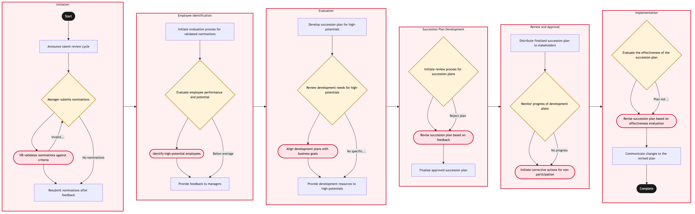

Updated 2026-08-21
Talent Review and Succession Planning
Process flow
Click to zoom

Process steps
▼
Phase 1 — Initiation
4 steps
| Step | Activity | Role | System | Input | Output | KPI | Dec | Exc | Pain point |
|---|---|---|---|---|---|---|---|---|---|
| 1.1 | Announce talent review cycle | HR Manager | Microsoft 365C | Calendar date | Email notifications sent to all managers | 90% response rate from managers | N | N | Low manager engagement in the initial announcement |
| 1.2 | Manager submits nominations | Manager | PhenomB | Employee details | Nomination list | Average 3 nominations per manager | Y | N | Inconsistent nomination quality across managers |
| 1.3 | HR validates nominations against criteria | HR Analyst | DayforceB | Nomination list | Validated nominations | 95% validation accuracy | N | Y | Complex union rule set conflicts with nomination criteria |
| 1.4 | Resubmit nominations after feedback | Manager | PhenomB | Feedback and guidelines | Revised nominations | 80% successful resubmissions | N | N | Managers struggle to meet revised criteria |
▼
Phase 2 — Employee Identification
4 steps
| Step | Activity | Role | System | Input | Output | KPI | Dec | Exc | Pain point |
|---|---|---|---|---|---|---|---|---|---|
| 2.1 | Initiate evaluation process for validated nominations | HR Analyst | SAP S/4HANAA | Validated nominations | Evaluation forms distributed | Forms sent within 3 business days | N | N | Latency in SAP system updates |
| 2.2 | Evaluate employee performance and potential | HR Analyst | DayforceB | Employee data | Performance scores | Average score 75% | Y | N | Subjectivity in performance scoring |
| 2.3 | Identify high-potential employees | HR Analyst | SAP S/4HANAA | Performance scores | High-potential list | 10% of total employees identified | N | Y | Data synchronization issues between Dayforce and SAP |
| 2.4 | Provide feedback to managers | HR Manager | Microsoft 365C | High-potential list | Feedback emails sent | 90% manager response rate | N | N | Managers require additional training on feedback processes |
▼
Phase 3 — Evaluation
4 steps
| Step | Activity | Role | System | Input | Output | KPI | Dec | Exc | Pain point |
|---|---|---|---|---|---|---|---|---|---|
| 3.1 | Develop succession plan for high-potentials | HR Consultant | PhenomB | High-potential list | Succession plan draft | Plans completed within 2 weeks | N | N | Resource constraints in HR department |
| 3.2 | Review development needs for high-potentials | HR Consultant | DayforceB | High-potential list | Development needs analysis | 95% completion rate | Y | N | Overlapping development programs |
| 3.3 | Align development plans with business goals | HR Manager | SAP S/4HANAA | Development needs analysis | Aligned development plan | 85% alignment rate | N | Y | Budget constraints for development initiatives |
| 3.4 | Provide development resources to high-potentials | Training Coordinator | PhenomB | Aligned development plan | Resource allocation | 90% resource availability | N | N | High demand for training slots |
▼
Phase 4 — Succession Plan Development
3 steps
| Step | Activity | Role | System | Input | Output | KPI | Dec | Exc | Pain point |
|---|---|---|---|---|---|---|---|---|---|
| 4.1 | Initiate review process for succession plans | HR Manager | Microsoft 365C | Succession plan draft | Review comments sent to HR Analyst | 90% review completion rate | Y | N | Complexity in review criteria |
| 4.2 | Revise succession plan based on feedback | HR Consultant | PhenomB | Review comments | Revised succession plan | 80% successful revisions | N | Y | Feedback loop delays |
| 4.3 | Finalize approved succession plan | HR Manager | SAP S/4HANAA | Revised succession plan | Finalized succession plan document | 100% plan approval rate | N | N | Internal approvals taking longer than expected |
▼
Phase 5 — Review and Approval
3 steps
| Step | Activity | Role | System | Input | Output | KPI | Dec | Exc | Pain point |
|---|---|---|---|---|---|---|---|---|---|
| 5.1 | Distribute finalized succession plan to stakeholders | HR Manager | Microsoft 365C | Finalized succession plan document | Plan distributed to relevant departments | 90% distribution rate | N | N | Inconsistent communication channels |
| 5.2 | Monitor progress of development plans | HR Analyst | DayforceB | Finalized succession plan document | Progress reports | 80% timely reporting | Y | N | Lack of visibility into employee participation |
| 5.3 | Initiate corrective actions for non-participation | HR Manager | Microsoft 365C | Progress reports | Action plans sent to employees | 70% participation rate | N | Y | Employee resistance to development initiatives |
▼
Phase 6 — Implementation
3 steps
| Step | Activity | Role | System | Input | Output | KPI | Dec | Exc | Pain point |
|---|---|---|---|---|---|---|---|---|---|
| 6.1 | Evaluate the effectiveness of the succession plan | HR Manager | SAP S/4HANAA | Progress reports and business performance data | Effectiveness evaluation report | 85% accuracy in evaluation | Y | N | Data quality issues affecting evaluation |
| 6.2 | Revise succession plan based on effectiveness evaluation | HR Consultant | PhenomB | Effectiveness evaluation report | Revised succession plan for next cycle | 80% successful revisions | N | Y | Resource allocation issues in revision |
| 6.3 | Communicate changes to the revised plan | HR Manager | Microsoft 365C | Revised succession plan for next cycle | Communication sent to all departments | 90% successful communication | N | N | Resistance to change in organizational culture |
Swim lanes
HR Manager1.1 2.4 3.3 4.1 4.3 5.1 5.3 6.1 6.3
Manager1.2 1.4
HR Analyst1.3 2.1 2.2 2.3 5.2
HR Consultant3.1 3.2 4.2 6.2
Training Coordinator3.4
Systems touched
Microsoft 365CPhenomBDayforceBSAP S/4HANAA
Key performance indicators
- Manager response rate
- Nomination quality
- Validation accuracy
- Resubmission success rate
- Form distribution time
- Performance scoring consistency
- High-potential identification rate
- Feedback email response rate
Risks and control points
- Low manager engagement
- Inconsistent nominations
- Union rule set conflicts
- Data synchronization issues
- SAP system latency
- Subjectivity in scoring
- Resource constraints
- Budget limitations
Air Canada Process Wiki — process and systems reference compiled from public sources
for IT Application Management and User Support pre-sales discovery.
Built 2026-08-21. Every system carries an evidence tier: tier C is an industry pattern and tier U is an open
question, and neither should be asserted as fact about Air Canada without confirmation in discovery.
Not affiliated with or endorsed by Air Canada. Air Canada, Aeroplan and Altitude are trademarks of Air Canada.